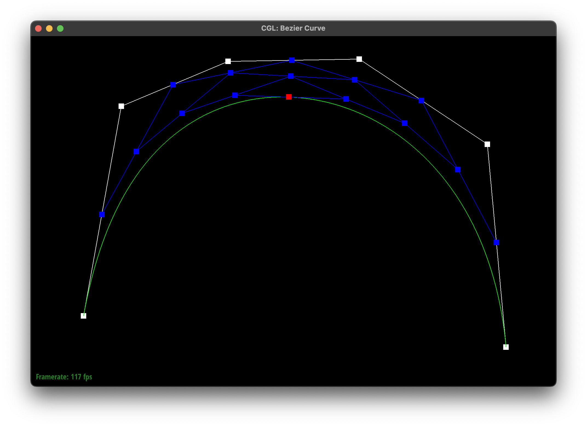

Overview
YOUR RESPONSE GOES HERE
Section I: Bezier Curves and Surfaces
Part 1: Bezier Curves with 1D de Casteljau Subdivision
Briefly explain de Casteljau's algorithm and how you implemented it in order to evaluate Bezier curves.
de Casteljau's algorithm works by recursively "lerping" (taking a linear combination of) points to get a weighted average of the two (the resulting point is then lerped again until we have consolidated four points into one). The weights are determined by t, a number between 0 and 1. This process is then repeated with different values of t in order to get many points on the curve (one value of t only gives one point on the curve). I implemented this by first checking to see if there is only one point left in the vector of coordinate--if so, we have a point and we just return it. Else, we loop through the points given and lerp consecutive ones, adding them to a new vector that we then return.
Take a look at the provided .bzc files and create your own Bezier curve with 6 control points of your choosing. Use this Bezier curve for your screenshots below.
see below
Show screenshots of each step / level of the evaluation from the original control points down to the final evaluated point. Press E to step through. Toggle C to show the completed Bezier curve as well.
|
Level 0
|
Level 1
|
|
Level 2
|
Level 3
|
|
Level 4
|
|

Curve
|
Show a screenshot of a slightly different Bezier curve by moving the original control points around and modifying the parameter \(t\) via mouse scrolling.
 larger t
larger t
Part 2: Bezier Surfaces with Separable 1D de Casteljau
Briefly explain how de Casteljau algorithm extends to Bezier surfaces and how you implemented it in order to evaluate Bezier surfaces.
The de Casteljau algorithm extends to Bezier surfaces by adding an extra layer of Bezier curve interpolation. Essentially, we take slivers of the control points and create Bezier curves from them using u, and then we use the set of points from those curves as control points for another round of evaluation using v to get a single point. I implemented this by first implementing the same evaluation function form part one generalized to 3D in evalateStep; second writing evaluate1D to effectively recurse the evaluateStep function on the set of points, interpolating using the given paramenter; and third writing evalute such that it performed evaluate1D on each row of the controlPoints matrix with parameter u, and then evaluate1D on the resulting points with parameter v. This performs the algorithm described above.
Show a screenshot of bez/teapot.bez (not .dae) evaluated by your implementation.
teapot!
Section II: Triangle Meshes and Half-Edge Data Structure
Part 3: Area-Weighted Vertex Normals
Briefly explain how you implemented the area-weighted vertex normals.
I implemented the area-weighted vertex normals by looping through all of the triangles neighboring the vertex and doing the following operations: 1. getting two vectors along the edges of the face of the triangle by subtracting the positions of the vertices 2. finding the noraml vector by doing the cross-product of those two vectors 3. adding the resulting normal vector/2 to the final normal vector that we return. Finally, we normalize the final normal vector and return it.
Show screenshots of dae/teapot.dae (not .bez) comparing teapot shading with and without vertex normals. Use Q to toggle default flat shading and Phong shading.
|
block shading
|
phong shading
|
Part 4: Edge Flip
Briefly explain how you implemented the edge flip operation and describe any interesting implementation / debugging tricks you have used.
I implemented the edge flip by carefully executing a series of pointer reassignments. First, I saved pointers to each of the original half-edges, vertices, and faces, named such that they align with the labals in my diagram. Then I changed each of the pointers required, including the vertices' and faces' half-edges, as well as the many fields of the half-edges. Labeling the original pointers was extremely helpful, as it allowed me to avoid confusion in refering to elements with pointer in other elements that might have been previousy changed. This allowed me to avoid headaches in implementation.
Show screenshots of the teapot before and after some edge flips.
|
before edge flips
|
after edge flips (heart!)
|
Write about your eventful debugging journey, if you have experienced one.
My debugging journey was difficult, because my bug was causing the code infinite loop, so it would load nothing and give me very few clues as to where the issue could be. I used print statements to discover that the loop was outside of my function, and then resorted to double-checking each pointer re-assignment. On the first check, I didn't find anything wrong, but the code was still erroring. On the second check, I realised that I had mis-assigned two of my halfedges in my initial labeling scheme. I had accidentally assigned them to the twins of each other, which evidently caused some serious problems. Once I found this, the code worked smoothly.
Part 5: Edge Split
Briefly explain how you implemented the edge split operation and describe any interesting implementation / debugging tricks you have used.
I implemented the edge split operation in a similar way to the edge flip operation. I first saved the original pointers of vertices, edges, half-edges, and faces, and then reassigned them based on the saved pointers. This once again made implementation much easier than keeping track of changing references. In the function, I was sure to group like changes (for example, creating the new edges or changing all of the vertices' halfedges) to made the code easier to read and debug. This made it much more straightforward, as I had clear grouping for each type of change.
Show screenshots of a mesh before and after some edge splits.
|
before edge splits
|
after edge splits (heart!)
|
Show screenshots of a mesh before and after a combination of both edge splits and edge flips.
|
before edge splits and flips
|
 after edge splits and flips
after edge splits and flips
|
Write about your eventful debugging journey, if you have experienced one.
Because I initially started this function with a copy of the labeled pointers from the flip function, the code debugging was uneventful for this part. The mistake of the previous function was fixed, and I was in the swing of careful pointer assignment.
If you have implemented support for boundary edges, show screenshots of your implementation properly handling split operations on boundary edges.
not implemented
Part 6: Loop Subdivision for Mesh Upsampling
Briefly explain how you implemented the loop subdivision and describe any interesting implementation / debugging tricks you have used.
I implemented the loop subdivision using the reccomened order--that is, by computing the new vertex positions before completing any subdivision. The whole implementation was made using a series of for loops, each performing some operation over the whole mesh (either over the vertices or the edges). First, I looped through the vertices, calculating the new positions for after the subdivision. Then, I looped through the edges to calculate the new position of the vertex that would be added to each edge. I also changed the split edge code to update the newPosition field of the newly created vertex to that of the newPosition member of the edge we're splitting. This made later vertex position updating simpler. Then, I once again looped through the edges, splitting all of the original edges. This loop gave me some toruble, as I at first couldn't get it to stop looping, as marking only the two edges that were not part of the original split edge as new would cause an infitine loop. I ended up looping through the edges for this part by looping (number of edges at the start) times, as opposed to looping until we reach the end. Then, I loop again through the edges, flipping the ones that connect a new vertex to an old one. In this same loop, we set all of the edges' isNew member to false for future subdivision calls. Lastly, we loop through all of the vertices, updating the position to new position we calculated at the start and setting the isNew member to false.
Take some notes, as well as some screenshots, of your observations on how meshes behave after loop subdivision. What happens to sharp corners and edges? Can you reduce this effect by pre-splitting some edges?
|
Before subdivision, we can see, especially on the edges, that the triangels make the sphere a bit choppy.
|
After subdivison, the sphere is much smoother. This is the desired effect of subdivision.
|
|
the cube starts off with sharp corners.
|
after the first subdivision loop, the cube has almost completely lost its shape. It is a round-ish blob, with no sharp creases on its edges.
|
|
It continues to round.
|
and again.
|
|
at this point, its pretty much unrecognizable.
|
|
Some pre-subdivision edge flips.
|
A completely different shape than before!
|
 Some pre-subdivision edge splits performed on the top and bottom of the cube..
Some pre-subdivision edge splits performed on the top and bottom of the cube..
|
Instead of a blob, it looks like a marshmallow!
|
Load dae/cube.dae. Perform several iterations of loop subdivision on the cube. Notice that the cube becomes slightly asymmetric after repeated subdivisions. Can you pre-process the cube with edge flips and splits so that the cube subdivides symmetrically? Document these effects and explain why they occur. Also explain how your pre-processing helps alleviate the effects.
See above for how the cube assymetrically subdivides. I can preprocess this so that it processes symmetrically by splitting edges such that the cube's triangles are symmetrical. Initially, the cube is composed of square faces made of two triangles faces, but this is an asymmtrical way of representing the face. By splitting each of the diagonal edges on the faces of the cube, we can make add triangles so that the faces are symmetrically represented. This causes the subdivision to work symmetrically.
|
these diagonal eges on the original cube are what cause the asymmetry.
|
 by splitting them, we get these nice symmetrical faces.
by splitting them, we get these nice symmetrical faces.
|
|
After two levels of subdivision, we can see the cube is symmetrical, unlike previously!
|
The symmetry is especailly obvious after 4 levels.
|
If you have implemented any extra credit extensions, explain what you did and document how they work with screenshots.
not implemented
Part 7 (Optional, Possible Extra Credit)
Save your best polygon mesh as partsevenmodel.dae in your docs folder and show us a screenshot of the mesh in your write-up.
not implemented
Include a series of screenshots showing your original mesh and your mesh after one and two rounds of subdivision. If you have used custom shaders, include screenshots of your mesh with those shaders applied as well.
not implemented
Describe what you have done to enhance your mesh beyond the simple humanoid mesh described in the tutorial.
not implemented